Статистика обращений к autorist.ru
Статистика обращений к autorist.ru
Программа стартовала в сб. 31 янв 2015 15:27.
Анализ обращений к серверу с вт. 30 апр 2013 16:11 по сб. 31 янв 2015 14:08 (640,91 дней).
Статистика обращений к autorist.ruПрограмма стартовала в сб. 31 янв 2015 15:27.
Анализ обращений к серверу с вт. 30 апр 2013 16:11 по сб. 31 янв 2015 14:08 (640,91 дней).
(Переход: Вверх | Основная Информация | Статистика по месяцам | Статистика по дням недели | Статистика по времени суток | Статистика по доменам | Статистика по организациям | Статистика отказов по ссылкам | Статистика по ссылающимся сайтам | Статистика по поисковым словам | Статистика по браузерам (подробная) | Статистика по браузерам (суммарная) | Статистика по операционным системам | Статистика по коду возврата | Статистика по размерам файлов | Статистика по типам файлов | Статистика по директориям | Статистика по запросам)
Запись в круглых скобках - данные за 7 дней до 31 янв 2015 15:27.
Успешных обращений: 12 622 (153)
Среднее кол. успешных обращений в день: 19 (21)
Успешных обращений к страницам: 8 116 (94)
Среднее кол. успешных обращений к страницам в день: 12 (13)
Неуспешных запросов: 10 167 (7)
Перенаправленных запросов: 2 (0)
Количество запрошенных файлов: 87 (5)
Количество обслуженных хостов: 2 092 (13)
Данных передано: 340,16 мегабайт (3,84 мегабайт)
Среднее кол. переданных данных в день: 543,47 килобайт (561,19 килобайт)
(Переход: Вверх | Основная Информация | Статистика по месяцам | Статистика по дням недели | Статистика по времени суток | Статистика по доменам | Статистика по организациям | Статистика отказов по ссылкам | Статистика по ссылающимся сайтам | Статистика по поисковым словам | Статистика по браузерам (подробная) | Статистика по браузерам (суммарная) | Статистика по операционным системам | Статистика по коду возврата | Статистика по размерам файлов | Статистика по типам файлов | Статистика по директориям | Статистика по запросам)
Каждый символ ( ) отображает 15 обращений к страницам или около этого.
) отображает 15 обращений к страницам или около этого.
| месяц | запросы | страниц | |
|---|---|---|---|
| апр 2013 | 1 | 1 | |
| мая 2013 | 460 | 290 |   |
| июн 2013 | 675 | 404 |   |
| июл 2013 | 649 | 354 | |
| авг 2013 | 554 | 334 | |
| сен 2013 | 708 | 448 | |
| окт 2013 | 707 | 403 | |
| ноя 2013 | 616 | 398 | |
| дек 2013 | 632 | 419 | |
| янв 2014 | 612 | 414 | |
| фев 2014 | 530 | 373 | |
| мар 2014 | 608 | 402 | |
| апр 2014 | 606 | 347 | |
| мая 2014 | 403 | 327 | |
| июн 2014 | 436 | 293 | |
| июл 2014 | 577 | 393 | |
| авг 2014 | 551 | 334 | |
| сен 2014 | 560 | 353 | |
| окт 2014 | 778 | 530 |  |
| ноя 2014 | 540 | 399 | |
| дек 2014 | 742 | 461 | |
| янв 2015 | 677 | 439 | |
Наибольшее количество обращений в окт 2014 (530 обращений к страницам).
(Переход: Вверх | Основная Информация | Статистика по месяцам | Статистика по дням недели | Статистика по времени суток | Статистика по доменам | Статистика по организациям | Статистика отказов по ссылкам | Статистика по ссылающимся сайтам | Статистика по поисковым словам | Статистика по браузерам (подробная) | Статистика по браузерам (суммарная) | Статистика по операционным системам | Статистика по коду возврата | Статистика по размерам файлов | Статистика по типам файлов | Статистика по директориям | Статистика по запросам)
Каждый символ () отображает 40 обращений к страницам или около этого.
| день | запросы | страниц | |
|---|---|---|---|
| вс. | 1447 | 1027 | |
| пн. | 1479 | 1042 | |
| вт. | 2522 | 1295 | |
| ср. | 2212 | 1266 | |
| чт. | 1707 | 1111 | |
| пт. | 1723 | 1249 | |
| сб. | 1532 | 1126 | |
(Переход: Вверх | Основная Информация | Статистика по месяцам | Статистика по дням недели | Статистика по времени суток | Статистика по доменам | Статистика по организациям | Статистика отказов по ссылкам | Статистика по ссылающимся сайтам | Статистика по поисковым словам | Статистика по браузерам (подробная) | Статистика по браузерам (суммарная) | Статистика по операционным системам | Статистика по коду возврата | Статистика по размерам файлов | Статистика по типам файлов | Статистика по директориям | Статистика по запросам)
Каждый символ () отображает 15 обращений к страницам или около этого.
| час | запросы | страниц | |
|---|---|---|---|
| 0 | 651 | 491 | |
| 1 | 408 | 281 | |
| 2 | 666 | 530 | |
| 3 | 436 | 318 | |
| 4 | 370 | 278 | |
| 5 | 350 | 230 | |
| 6 | 390 | 274 | |
| 7 | 413 | 328 | |
| 8 | 581 | 422 | |
| 9 | 512 | 305 | |
| 10 | 400 | 275 | |
| 11 | 597 | 263 | |
| 12 | 548 | 283 | |
| 13 | 533 | 328 | |
| 14 | 669 | 359 | |
| 15 | 670 | 342 | |
| 16 | 550 | 355 | |
| 17 | 640 | 360 | |
| 18 | 546 | 371 | |
| 19 | 496 | 323 | |
| 20 | 582 | 419 | |
| 21 | 517 | 363 | |
| 22 | 595 | 303 | |
| 23 | 502 | 315 | |
(Переход: Вверх | Основная Информация | Статистика по месяцам | Статистика по дням недели | Статистика по времени суток | Статистика по доменам | Статистика по организациям | Статистика отказов по ссылкам | Статистика по ссылающимся сайтам | Статистика по поисковым словам | Статистика по браузерам (подробная) | Статистика по браузерам (суммарная) | Статистика по операционным системам | Статистика по коду возврата | Статистика по размерам файлов | Статистика по типам файлов | Статистика по директориям | Статистика по запросам)
Список доменов, отсортировано по суммарному трафику.
| запросы | %байт | домен |
|---|---|---|
| 12622 | 100% | [нераспознанный IP-адрес] |
(Переход: Вверх | Основная Информация | Статистика по месяцам | Статистика по дням недели | Статистика по времени суток | Статистика по доменам | Статистика по организациям | Статистика отказов по ссылкам | Статистика по ссылающимся сайтам | Статистика по поисковым словам | Статистика по браузерам (подробная) | Статистика по браузерам (суммарная) | Статистика по операционным системам | Статистика по коду возврата | Статистика по размерам файлов | Статистика по типам файлов | Статистика по директориям | Статистика по запросам)
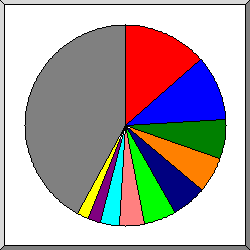
Поделено на сектора по количеству обращений.
 66.249
66.249
 178.154
178.154
 95
95
 46
46
 109
109
 91
91
 5
5
 194.226
194.226
 195.239
195.239
 37
37
 другое
другое
Показано первые 20 организаций - по количеству обращений, отсортировано по количеству обращений.
| запросы | %байт | организация |
|---|---|---|
| 2286 | 7,56% | 66.249 |
| 1357 | 5,32% | 178.154 |
| 696 | 10,16% | 95 |
| 652 | 6,65% | 46 |
| 512 | 2,58% | 109 |
| 497 | 2,30% | 91 |
| 448 | 4,43% | 5 |
| 412 | 7,78% | 194.226 |
| 279 | 1,00% | 195.239 |
| 206 | 1,68% | 37 |
| 205 | 2,96% | 176.193 |
| 196 | 2,90% | 176.195 |
| 171 | 0,02% | 188.92 |
| 153 | 1,66% | 94 |
| 152 | 0,77% | 195.54 |
| 143 | 3,42% | 199.30 |
| 141 | 2,35% | 85 |
| 137 | 1,71% | 89 |
| 129 | 1,54% | 31 |
| 125 | 0,27% | 123 |
| 3725 | 32,95% | [не распознано: 347 организаций] |
(Переход: Вверх | Основная Информация | Статистика по месяцам | Статистика по дням недели | Статистика по времени суток | Статистика по доменам | Статистика по организациям | Статистика отказов по ссылкам | Статистика по ссылающимся сайтам | Статистика по поисковым словам | Статистика по браузерам (подробная) | Статистика по браузерам (суммарная) | Статистика по операционным системам | Статистика по коду возврата | Статистика по размерам файлов | Статистика по типам файлов | Статистика по директориям | Статистика по запросам)
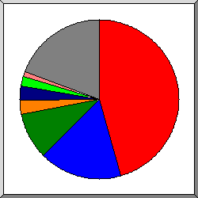
Поделено на сектора по количеству отказов.
http://www.baidu.com/
http://autorist.ru/
http://www.autorist.ru/robots.txt
http://autorist.ru/index.php
http://autorist.ru/wp-login.php
другое
Показано первые 30 ссылающихся URLs - по количеству отказов, отсортировано по количеству отказов.
(Переход: Вверх | Основная Информация | Статистика по месяцам | Статистика по дням недели | Статистика по времени суток | Статистика по доменам | Статистика по организациям | Статистика отказов по ссылкам | Статистика по ссылающимся сайтам | Статистика по поисковым словам | Статистика по браузерам (подробная) | Статистика по браузерам (суммарная) | Статистика по операционным системам | Статистика по коду возврата | Статистика по размерам файлов | Статистика по типам файлов | Статистика по директориям | Статистика по запросам)
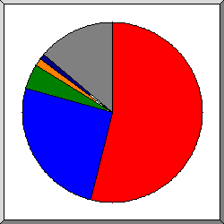
Поделено на сектора по количеству обращений.
http://www.autorist.ru/
http://autorist.ru/
http://yandex.ru/
http://www.mayka63.ru/
http://r-e-f-e-r-e-r.com/
http://www.multi-links.ru/
другое
Показано первые 30 ссылающихся сайтов - по количеству обращений, отсортировано по количеству обращений.
| запросы | сайт |
|---|---|
| 2606 | http://www.autorist.ru/ |
| 1341 | http://autorist.ru/ |
| 203 | http://yandex.ru/ |
| 101 | http://www.mayka63.ru/ |
| 74 | http://r-e-f-e-r-e-r.com/ |
| 55 | http://www.multi-links.ru/ |
| 50 | http://whois.domaintools.com/ |
| 36 | http://wmaid.com/ |
| 24 | http://www.lastfm.ru/ |
| 17 | http://ddlmega.net/ |
| 17 | http://www.google.com/ |
| 15 | http://tovargold.awardspace.com/ |
| 13 | http://getdownload.ws/ |
| 13 | http://hotdl.in/ |
| 13 | http://www.baidu.com/ |
| 12 | http://vk.com/ |
| 12 | https://www.google.ru/ |
| 10 | http://gdzz.url.ph/ |
| 10 | http://u12files.com/ |
| 10 | http://overx50.com/ |
| 10 | http://netcomber.com/ |
| 10 | https://www.google.com/ |
| 9 | http://uni5download.com/ |
| 8 | http://zaimy-rf.ru/ |
| 8 | http://loadopia.com/ |
| 8 | http://dres.kz/ |
| 8 | http://onload.pw/ |
| 8 | http://wildberies.net/ |
| 7 | http://w12files.com/ |
| 7 | http://google.com/ |
| 352 | [не распознано: 159 сайтов] |
(Переход: Вверх | Основная Информация | Статистика по месяцам | Статистика по дням недели | Статистика по времени суток | Статистика по доменам | Статистика по организациям | Статистика отказов по ссылкам | Статистика по ссылающимся сайтам | Статистика по поисковым словам | Статистика по браузерам (подробная) | Статистика по браузерам (суммарная) | Статистика по операционным системам | Статистика по коду возврата | Статистика по размерам файлов | Статистика по типам файлов | Статистика по директориям | Статистика по запросам)
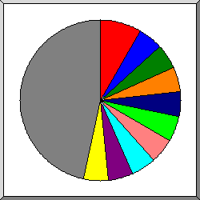
Поделено на сектора по количеству обращений.
installerex
twitter
akado
п©я─п╟п╡
e
wmaid.com
reputation
management
п╟п╡я┌п╬п╡п╩п╟п╢п╣п╩я▄я├п╣п╡
online
другое
Показано первые 30 слова запросов - по количеству обращений, отсортировано по количеству обращений.
| запросы | поисковое выражение |
|---|---|
| 5 | installerex |
| 3 | |
| 3 | akado |
| 3 | п©я─п╟п╡ |
| 3 | e |
| 3 | wmaid.com |
| 3 | reputation |
| 3 | management |
| 3 | п╟п╡я┌п╬п╡п╩п╟п╢п╣п╩я▄я├п╣п╡ |
| 3 | online |
| 2 | autorist.ru |
| 2 | п╥п╟я┴п╦я┌п╟ |
| 2 | granger |
| 2 | explore |
| 2 | whitelaw |
| 2 | avia |
| 2 | r |
| 1 | website |
| 1 | п╪п╟пЁп╟п╥п╦п╫ |
| 1 | п©п╬ |
| 1 | п╥п╟я┴п╦я┌п╣ |
| 1 | official |
| 1 | r.com |
| 1 | п©я─п╬п╦п╥п╡п╬п╩п╬п╪ |
| 1 | я│ |
| 1 | f |
| 1 | |
| 1 | п╨п╬п╪п©п╟п╫п╦я▐ |
| 1 | пЁп╦п╠п╢п╢ |
| 1 | п╟п╨п╨п╟я┐п╫я┌п╬п╡ |
| 1 | [не распознано: 1 поисковое выражение] |
(Переход: Вверх | Основная Информация | Статистика по месяцам | Статистика по дням недели | Статистика по времени суток | Статистика по доменам | Статистика по организациям | Статистика отказов по ссылкам | Статистика по ссылающимся сайтам | Статистика по поисковым словам | Статистика по браузерам (подробная) | Статистика по браузерам (суммарная) | Статистика по операционным системам | Статистика по коду возврата | Статистика по размерам файлов | Статистика по типам файлов | Статистика по директориям | Статистика по запросам)
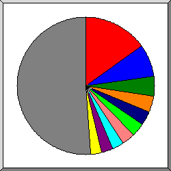
Поделено на сектора по количеству обращений к странице.
Mozilla/5.0 (compatible; YandexBot/3.0; +http://yandex.com/bots)
Mozilla/5.0 (compatible; Googlebot/2.1; +http://www.google.com/bot.html)
Mozilla/5.0 (X11; Linux x86_64) AppleWebKit/537.11 (KHTML, like Gecko) Ubuntu Chromium/23.0.1271.97 Chrome/23.0.1271.97 Safari/537.11
SAMSUNG-SGH-E250/1.0 Profile/MIDP-2.0 Configuration/CLDC-1.1 UP.Browser/6.2.3.3.c.1.101 (GUI) MMP/2.0 (compatible; Googlebot-Mobile/2.1; +http://www.google.com/bot.html)
Mozilla/5.0 (compatible; Nigma.ru/3.0; crawler@nigma.ru)
DoCoMo/2.0 N905i(c100;TB;W24H16) (compatible; Googlebot-Mobile/2.1; +http://www.google.com/bot.html)
Mozilla/5.0 (Macintosh; Intel Mac OS X 10_8_4) AppleWebKit/537.36 (KHTML, like Gecko) Chrome/28.0.1500.71 Safari/537.36
Mozilla/5.0 (iPhone; CPU iPhone OS 6_0 like Mac OS X) AppleWebKit/536.26 (KHTML, like Gecko) Version/6.0 Mobile/10A5376e Safari/8536.25 (compatible; Googlebot/2.1; +http://www.google.com/bot.html)
Mozilla/5.0 (iPhone; U; CPU iPhone OS 4_1 like Mac OS X; en-us) AppleWebKit/532.9 (KHTML, like Gecko) Version/4.0.5 Mobile/8B117 Safari/6531.22.7 (compatible; Googlebot-Mobile/2.1; +http://www.google.com/bot.html)
Mozilla/5.0 (compatible; Baiduspider/2.0; +http://www.baidu.com/search/spider.html)
другое
Показано первые 40 браузеров - по количеству обращений к странице, отсортировано по количеству обращений к странице.
| запросы | страниц | браузер |
|---|---|---|
| 1540 | 1383 | Mozilla/5.0 (compatible; YandexBot/3.0; +http://yandex.com/bots) |
| 1013 | 607 | Mozilla/5.0 (compatible; Googlebot/2.1; +http://www.google.com/bot.html) |
| 359 | 359 | Mozilla/5.0 (X11; Linux x86_64) AppleWebKit/537.11 (KHTML, like Gecko) Ubuntu Chromium/23.0.1271.97 Chrome/23.0.1271.97 Safari/537.11 |
| 290 | 290 | SAMSUNG-SGH-E250/1.0 Profile/MIDP-2.0 Configuration/CLDC-1.1 UP.Browser/6.2.3.3.c.1.101 (GUI) MMP/2.0 (compatible; Googlebot-Mobile/2.1; +http://www.google.com/bot.html) |
| 284 | 284 | Mozilla/5.0 (compatible; Nigma.ru/3.0; crawler@nigma.ru) |
| 269 | 269 | DoCoMo/2.0 N905i(c100;TB;W24H16) (compatible; Googlebot-Mobile/2.1; +http://www.google.com/bot.html) |
| 244 | 244 | Mozilla/5.0 (Macintosh; Intel Mac OS X 10_8_4) AppleWebKit/537.36 (KHTML, like Gecko) Chrome/28.0.1500.71 Safari/537.36 |
| 203 | 203 | Mozilla/5.0 (iPhone; CPU iPhone OS 6_0 like Mac OS X) AppleWebKit/536.26 (KHTML, like Gecko) Version/6.0 Mobile/10A5376e Safari/8536.25 (compatible; Googlebot/2.1; +http://www.google.com/bot.html) |
| 151 | 151 | Mozilla/5.0 (iPhone; U; CPU iPhone OS 4_1 like Mac OS X; en-us) AppleWebKit/532.9 (KHTML, like Gecko) Version/4.0.5 Mobile/8B117 Safari/6531.22.7 (compatible; Googlebot-Mobile/2.1; +http://www.google.com/bot.html) |
| 188 | 145 | Mozilla/5.0 (compatible; Baiduspider/2.0; +http://www.baidu.com/search/spider.html) |
| 131 | 131 | Mozilla/5.0 (compatible; MJ12bot/v1.4.5; http://www.majestic12.co.uk/bot.php?+) |
| 167 | 107 | Mozilla/4.0 (compatible; MSIE 6.0; Windows NT 5.1; SV1) |
| 107 | 107 | Mozilla/5.0 (iPhone; CPU iPhone OS 6_0 like Mac OS X) AppleWebKit/536.26 (KHTML, like Gecko) Version/6.0 Mobile/10A5376e Safari/8536.25 (compatible; Googlebot-Mobile/2.1; +http://www.google.com/bot.html) |
| 101 | 101 | Mozilla/5.0 (X11; Ubuntu; Linux x86_64; rv:31.0) Gecko/20100101 Firefox/31.0 |
| 189 | 95 | Mozilla/5.0 (compatible; statdom.ru/Bot; +http://statdom.ru/bot.html) |
| 93 | 93 | Mozilla/5.0 (Macintosh; Intel Mac OS X 10_9_2) AppleWebKit/537.36 (KHTML, like Gecko) Chrome/36.0.1944.0 Safari/537.36 |
| 123 | 84 | Mozilla/5.0 (compatible; bingbot/2.0; +http://www.bing.com/bingbot.htm) |
| 75 | 75 | Mozilla/5.0 (compatible; AhrefsBot/5.0; +http://ahrefs.com/robot/) |
| 56 | 56 | Mozilla/5.0 (compatible; oBot/2.3.1; +http://filterdb.iss.net/crawler/) |
| 69 | 56 | Mozilla/5.0 (Windows NT 6.1; WOW64; rv:23.0) Gecko/20100101 Firefox/23.0 |
| 49 | 49 | Mozilla/5.0 (Windows; U; Windows NT 5.1; en; rv:1.9.0.13) Gecko/2009073022 Firefox/3.5.2 (.NET CLR 3.5.30729) SurveyBot/2.3 (DomainTools) |
| 45 | 45 | Mozilla/5.0 (compatible; Web-Monitoring/1.0; +http://monoid.nic.ru/) |
| 44 | 44 | Mozilla/4.0 (compatible; MSIE 6.0; Windows NT 5.1) |
| 56 | 36 | Mozilla/5.0 (Windows NT 6.2; WOW64) Runet-Research-Crawler (itrack.ru/research/cmsrate; rating@itrack.ru) |
| 33 | 33 | YisouSpider |
| 32 | 32 | Mozilla/5.0 (compatible; DotBot/1.1; http://www.opensiteexplorer.org/dotbot, help@moz.com) |
| 31 | 31 | Mozilla/5.0 (compatible; WebMasterAid/1.0; +http://wmaid.com/explore/) |
| 31 | 31 | Python-urllib/3.4 |
| 30 | 30 | Mozilla/4.0 (compatible; Synapse) |
| 30 | 30 | Mozilla/5.0 (compatible; MJ12bot/v1.4.4; http://www.majestic12.co.uk/bot.php?+) |
| 25 | 25 | Opera/9.80 (Windows NT 6.1) Presto/2.12.388 Version/12.10 |
| 28 | 25 | Mozilla/4.0 (compatible; MSIE 6.0; Windows NT 5.1; SV1; .NET CLR 1.1.4322) |
| 24 | 24 | Mozilla/5.0 (compatible; openstat.ru/Bot) |
| 24 | 24 | Mozilla/5.0 (compatible; Linux x86_64; Mail.RU_Bot/2.0; +http://go.mail.ru/help/robots) |
| 23 | 23 | Mozilla/5.0 (Windows NT 5.1) AppleWebKit/537.36 (KHTML, like Gecko) Chrome/34.0.1847.131 Safari/537.36 |
| 22 | 22 | Mozilla/4.0 (compatible; MSIE 7.0; Windows NT 6.0) |
| 43 | 22 | Python-urllib/2.7 |
| 22 | 22 | Mozilla/5.0 (X11; Linux x86_64; rv:18.0) Gecko/20100101 Firefox/18.0 |
| 51 | 22 | Mozilla/5.0 (Windows NT 6.1; rv:15.0) Gecko/20100101 Firefox/15.0.1 |
| 43 | 22 | Mozilla/5.0 (Windows NT 6.2; WOW64) Russian CMS rating crawler (itrack.ru/cmsrate, avlasov@itrack.ru) |
| 6059 | 2465 | [не распознано: 852 браузеров] |
(Переход: Вверх | Основная Информация | Статистика по месяцам | Статистика по дням недели | Статистика по времени суток | Статистика по доменам | Статистика по организациям | Статистика отказов по ссылкам | Статистика по ссылающимся сайтам | Статистика по поисковым словам | Статистика по браузерам (подробная) | Статистика по браузерам (суммарная) | Статистика по операционным системам | Статистика по коду возврата | Статистика по размерам файлов | Статистика по типам файлов | Статистика по директориям | Статистика по запросам)
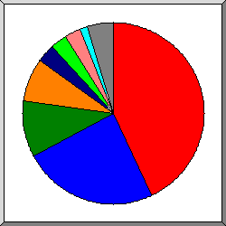
Поделено на сектора по количеству обращений к странице.
Netscape (compatible)
Safari
Firefox
MSIE
SAMSUNG-SGH-E250
DoCoMo
Opera
Mozilla
другое
Показано первые 20 браузеров - по количеству обращений к странице, отсортировано по количеству обращений к странице.
| N | запросы | страниц | браузер |
|---|---|---|---|
| 1 | 4333 | 3515 | Netscape (compatible) |
| 2 | 2995 | 1700 | Safari |
| 2136 | 1068 | Safari/537 | |
| 316 | 314 | Safari/8536 | |
| 151 | 151 | Safari/6531 | |
| 119 | 57 | Safari/534 | |
| 117 | 56 | Safari/535 | |
| 21 | 21 | Safari/536 | |
| 26 | 14 | Safari/533 | |
| 84 | 7 | Safari/9537 | |
| 5 | 5 | Safari/419 | |
| 3 | 3 | Safari/528 | |
| 3 | 1511 | 801 | Firefox |
| 266 | 144 | Firefox/3 | |
| 162 | 110 | Firefox/31 | |
| 86 | 59 | Firefox/23 | |
| 48 | 47 | Firefox/16 | |
| 42 | 40 | Firefox/18 | |
| 39 | 39 | Firefox/10 | |
| 66 | 37 | Firefox/15 | |
| 37 | 37 | Firefox/17 | |
| 25 | 25 | Firefox/2 | |
| 88 | 23 | Firefox/21 | |
| 4 | 1537 | 662 | MSIE |
| 526 | 321 | MSIE/6 | |
| 594 | 132 | MSIE/8 | |
| 180 | 78 | MSIE/7 | |
| 82 | 51 | MSIE/9 | |
| 39 | 37 | MSIE/5 | |
| 109 | 36 | MSIE/10 | |
| 4 | 4 | MSIE/2 | |
| 2 | 2 | MSIE/3 | |
| 1 | 1 | MSIE/4 | |
| 5 | 290 | 290 | SAMSUNG-SGH-E250 |
| 290 | 290 | SAMSUNG-SGH-E250/1 | |
| 6 | 269 | 269 | DoCoMo |
| 269 | 269 | DoCoMo/2 | |
| 7 | 650 | 266 | Opera |
| 625 | 241 | Opera/9 | |
| 13 | 13 | Opera/8 | |
| 6 | 6 | Opera/7 | |
| 2 | 2 | Opera/11 | |
| 2 | 2 | Opera/6 | |
| 8 | 279 | 99 | Mozilla |
| 23 | 23 | Mozilla/1 | |
| 2 | 2 | Mozilla/0 | |
| 9 | 83 | 62 | Python-urllib |
| 52 | 31 | Python-urllib/2 | |
| 31 | 31 | Python-urllib/3 | |
| 10 | 33 | 33 | YisouSpider |
| 11 | 20 | 20 | TurnitinBot |
| 20 | 20 | TurnitinBot/3 | |
| 12 | 20 | 20 | My Nutch Spider |
| 20 | 20 | My Nutch Spider/Nutch-1 | |
| 13 | 18 | 18 | SeznamBot |
| 18 | 18 | SeznamBot/3 | |
| 14 | 16 | 16 | ScreenerBot Crawler Beta 2.0 (+http: |
| 16 | 16 | ScreenerBot Crawler Beta 2.0 (+http://www | |
| 15 | 13 | 13 | Netscape |
| 4 | 4 | Netscape/0 | |
| 3 | 3 | Netscape/4 | |
| 3 | 3 | Netscape/6 | |
| 2 | 2 | Netscape/5 | |
| 1 | 1 | Netscape/3 | |
| 16 | 11 | 11 | Refbot |
| 11 | 11 | Refbot/1 | |
| 17 | 16 | 11 | curl |
| 16 | 11 | curl/7 | |
| 18 | 10 | 10 | python-requests |
| 10 | 10 | python-requests/2 | |
| 19 | 7 | 7 | Java |
| 7 | 7 | Java/1 | |
| 20 | 7 | 7 | rogerbot |
| 7 | 7 | rogerbot/1 | |
| 279 | 67 | [не распознано: 35 браузеров] |
(Переход: Вверх | Основная Информация | Статистика по месяцам | Статистика по дням недели | Статистика по времени суток | Статистика по доменам | Статистика по организациям | Статистика отказов по ссылкам | Статистика по ссылающимся сайтам | Статистика по поисковым словам | Статистика по браузерам (подробная) | Статистика по браузерам (суммарная) | Статистика по операционным системам | Статистика по коду возврата | Статистика по размерам файлов | Статистика по типам файлов | Статистика по директориям | Статистика по запросам)
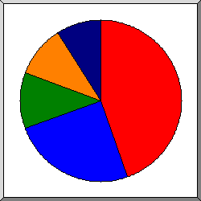
Поделено на сектора по количеству обращений к странице.
Неизвестная ОС
Windows
роботы
Macintosh
Unix
Список операционных систем, отсортировано по количеству обращений к странице.
| N | запросы | страниц | ОС |
|---|---|---|---|
| 1 | 4519 | 3600 | Неизвестная ОС |
| 2 | 5013 | 2013 | Windows |
| 3243 | 1108 | Неизвестная Windows-система | |
| 1633 | 782 | Windows XP | |
| 58 | 44 | Windows 2000 | |
| 31 | 31 | Windows Server 2003 | |
| 15 | 15 | Windows NT | |
| 14 | 14 | Windows ME | |
| 9 | 9 | Windows 98 | |
| 8 | 8 | Windows 95 | |
| 1 | 1 | Windows CE | |
| 1 | 1 | Windows 3.1 | |
| 3 | 1143 | 855 | роботы |
| 4 | 982 | 849 | Macintosh |
| 5 | 740 | 580 | Unix |
| 738 | 578 | Linux | |
| 2 | 2 | Другие Unix-системы |
(Переход: Вверх | Основная Информация | Статистика по месяцам | Статистика по дням недели | Статистика по времени суток | Статистика по доменам | Статистика по организациям | Статистика отказов по ссылкам | Статистика по ссылающимся сайтам | Статистика по поисковым словам | Статистика по браузерам (подробная) | Статистика по браузерам (суммарная) | Статистика по операционным системам | Статистика по коду возврата | Статистика по размерам файлов | Статистика по типам файлов | Статистика по директориям | Статистика по запросам)
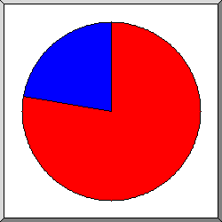
Поделено на сектора по количеству обращений.
200 OK
304 Not modified since last retrieval
404 Document not found
Список кодов возврата, отсортированный по порядковым номерам.
| запросы | код статус |
|---|---|
| 12229 | 200 OK |
| 2 | 301 Document moved permanently |
| 393 | 304 Not modified since last retrieval |
| 10167 | 404 Document not found |
(Переход: Вверх | Основная Информация | Статистика по месяцам | Статистика по дням недели | Статистика по времени суток | Статистика по доменам | Статистика по организациям | Статистика отказов по ссылкам | Статистика по ссылающимся сайтам | Статистика по поисковым словам | Статистика по браузерам (подробная) | Статистика по браузерам (суммарная) | Статистика по операционным системам | Статистика по коду возврата | Статистика по размерам файлов | Статистика по типам файлов | Статистика по директориям | Статистика по запросам)
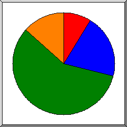
Поделено на сектора по количеству обращений.
0
101B- 1kB
1kB- 10kB
10kB-100kB
100kB- 1MB
другое
| размер | запросы | %байт |
|---|---|---|
| 0 | 757 | |
| 1B- 10B | 0 | |
| 11B- 100B | 21 | |
| 101B- 1kB | 486 | 0,04% |
| 1kB- 10kB | 1373 | 1,41% |
| 10kB-100kB | 9186 | 60,47% |
| 100kB- 1MB | 799 | 38,08% |
(Переход: Вверх | Основная Информация | Статистика по месяцам | Статистика по дням недели | Статистика по времени суток | Статистика по доменам | Статистика по организациям | Статистика отказов по ссылкам | Статистика по ссылающимся сайтам | Статистика по поисковым словам | Статистика по браузерам (подробная) | Статистика по браузерам (суммарная) | Статистика по операционным системам | Статистика по коду возврата | Статистика по размерам файлов | Статистика по типам файлов | Статистика по директориям | Статистика по запросам)
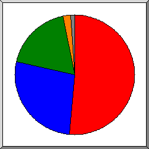
Поделено на сектора по суммарному трафику.
.jpg [JPEG graphics]
[директории]
.png [PNG graphics]
.ico
другое
Список расширений на которые приходиться, как минимум 0,1% трафика, отсортировано по суммарному трафику.
| запросы | %байт | расширение |
|---|---|---|
| 1928 | 51,34% | .jpg [JPEG graphics] |
| 8092 | 27,31% | [директории] |
| 556 | 18,11% | .png [PNG graphics] |
| 379 | 2,29% | .ico |
| 690 | 0,62% | .css [Cascading Style Sheets] |
| 952 | 0,33% | .js [JavaScript code] |
| 25 | [не распознано: 2 расширений] |
(Переход: Вверх | Основная Информация | Статистика по месяцам | Статистика по дням недели | Статистика по времени суток | Статистика по доменам | Статистика по организациям | Статистика отказов по ссылкам | Статистика по ссылающимся сайтам | Статистика по поисковым словам | Статистика по браузерам (подробная) | Статистика по браузерам (суммарная) | Статистика по операционным системам | Статистика по коду возврата | Статистика по размерам файлов | Статистика по типам файлов | Статистика по директориям | Статистика по запросам)
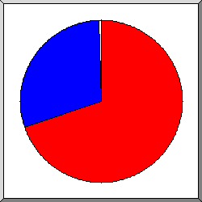
Поделено на сектора по суммарному трафику.
/img/
[корневой каталог]
другое
Список директорий на которые приходиться, как минимум 0,01% трафика, отсортировано по суммарному трафику.
| запросы | %байт | директория |
|---|---|---|
| 2468 | 69,43% | /img/ |
| 9672 | 30,26% | [корневой каталог] |
| 465 | 0,29% | /jquery.scrollTo-1.4.2/ |
| 16 | 0,01% | /img-sys/ |
| 1 | [не распознано: 1 директория] |
(Переход: Вверх | Основная Информация | Статистика по месяцам | Статистика по дням недели | Статистика по времени суток | Статистика по доменам | Статистика по организациям | Статистика отказов по ссылкам | Статистика по ссылающимся сайтам | Статистика по поисковым словам | Статистика по браузерам (подробная) | Статистика по браузерам (суммарная) | Статистика по операционным системам | Статистика по коду возврата | Статистика по размерам файлов | Статистика по типам файлов | Статистика по директориям | Статистика по запросам)
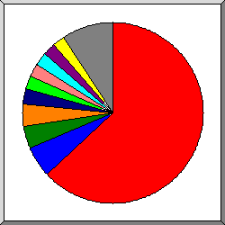
Поделено на сектора по количеству обращений.
/
/styles.css
/script.js
/jquery.scrollTo-1.4.2/jquery.scrollTo-min.js
/favicon.ico
/img/infopic/3_Rek.png
/img/infopic/2_Rek.jpg
/img/infopic/6_Rek.jpg
/img/infopic/7_Rek.jpg
/img/infopic/5_Rek.jpg
другое
Список файлов на которые приходиться, как минимум 20 запросов, отсортировано по количеству обращений.
| запросы | %байт | последнее время | файл |
|---|---|---|---|
| 8092 | 27,31% | 31 янв 15 14:08 | / |
| 122 | 0,42% | 2 июл 14 18:12 | /?87.242.64.23 |
| 58 | 0,18% | 28 янв 15 19:11 | /?182.118.20.249 |
| 33 | 0,11% | 25 янв 15 15:24 | /?101.226.169.208 |
| 10 | 0,04% | 11 дек 14 10:16 | /?dgcr=1 |
| 690 | 0,62% | 30 янв 15 15:36 | /styles.css |
| 487 | 0,04% | 30 янв 15 15:37 | /script.js |
| 465 | 0,29% | 30 янв 15 15:37 | /jquery.scrollTo-1.4.2/jquery.scrollTo-min.js |
| 379 | 2,29% | 31 янв 15 07:01 | /favicon.ico |
| 300 | 13,67% | 29 янв 15 14:38 | /img/infopic/3_Rek.png |
| 291 | 9,85% | 29 янв 15 14:38 | /img/infopic/2_Rek.jpg |
| 282 | 6,33% | 29 янв 15 14:38 | /img/infopic/6_Rek.jpg |
| 281 | 6,72% | 29 янв 15 14:38 | /img/infopic/7_Rek.jpg |
| 280 | 7,30% | 29 янв 15 14:38 | /img/infopic/5_Rek.jpg |
| 280 | 14,56% | 29 янв 15 14:38 | /img/infopic/1_Reklam.jpg |
| 280 | 6,09% | 29 янв 15 14:38 | /img/infopic/4_Rek.jpg |
| 240 | 4,43% | 29 янв 15 14:38 | /img/Avto.png |
| 234 | 0,49% | 29 янв 15 14:38 | /img/gradient_light.jpg |
| 21 | 14 янв 15 23:13 | /google8bc0e0a0ffaee658.html | |
| 20 | 0,01% | 28 янв 15 14:34 | [не распознано: 7 файлов] |